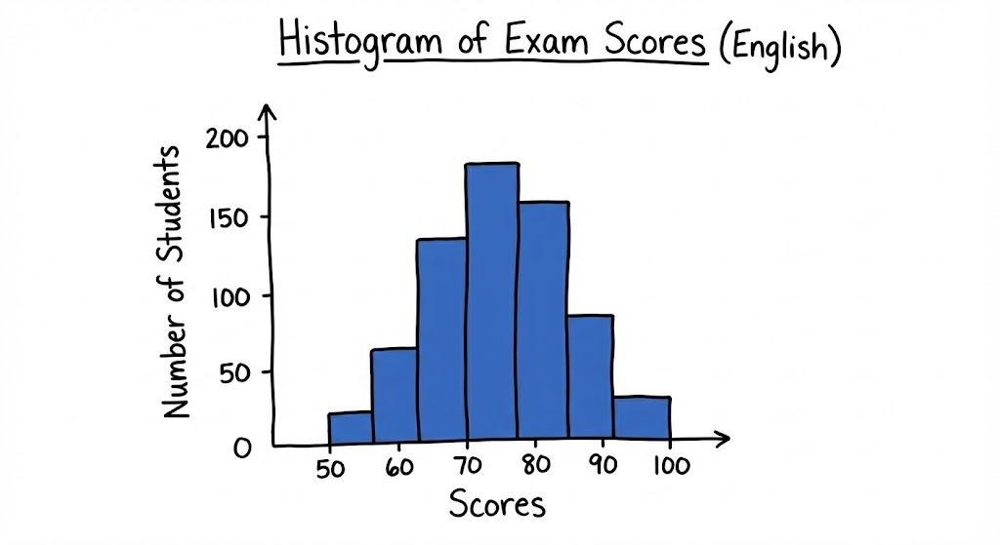

A histogram is a chart used to visualize the distribution of numerical data.
Represents a part of a whole expressed as a fraction of 100. It measures absolute performance.
Example: If you get 45 out of 50 questions right, your percentage is 90%.
Represents a relative rank within a group. It shows the percentage of scores that fall below a specific value.
Example: If you are in the 90th percentile, it means you scored better than 90% of the other people who took the test.
Data : [2,4,6,8,10,12,14,16,18,20,22]
Position : (25/100)×(11 : Number of data) = 2.75 => 3
Third number is 6
Position : (50/100)×(11 : Number of data) = 5.5 => 6
Sixth number is 12
Position : (75/100)×(11 : Number of data) = 8.25 => 9
Ninth number is 18
Quartile splits a data set into 4 pieces : Q1,Q2,Q3
Q1 : Data's bottom half median (25th Percentile)
Q2 : Data's median (50th Percentile)
Q3 : Data's upper half median (75th Percentile)
Covariance: A statistical measure that calculates how two variables change in relation to each other..
Positive Covariance: Indicates that the two variables tend to move in the same direction.
Negative Covariance: Indicates that the two variables tend to move in opposite directions.
Definiton : Correlation is a value that measures the strength and direction of relation between two variables. Unlike the covariance, correlation always takes value between -1 and 1.
Positive Correlation (Close to +1) : When one variable is increasing, the other one is increases too or the other way around (+.+)(-,-)
Negative Correlation (Close to -1) : When one variable is increasing, the other one is decreases or the other way around (+,-)(-,+)
Correlation is close to 0 : There is no relation between variables